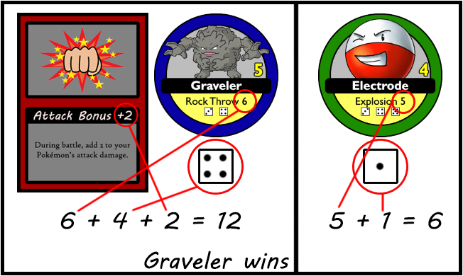

When you get the chance to catch a Pokémon, check the dice on the bottom of the chip. These represent the catch rate. If you can roll any of the shown dice, you catch it. In case of failure, the chip remains face up on the field. If you have special Poké Balls (item cards), you can use these to increase your odds. Keep in mind that you must use the Poké Ball before your roll, and that you can only use 1 at a time. On a side note: Mew is immune to special balls. You cannot use item cards when trying to catch Mew. For more information about Poké Balls, go to the Items page.
The "TradeStarted" event let's you trade with another player. Select one of his Pokémon and one of yours to initiate the trade. You can only trade Pokémon of the same rarity (same color of chip) and starters cannot be traded. When selecting the Pokémon you wish to trade, only those of a color that the other party has will be eligible. As an example, this means that you won't be able to select any green chips if the other trainer only has pink chips. Trading can only be stopped by the other trainer if he uses a Poké Doll.
Another event, namely "Challenge" lets you battle against another player. Your opponent can only refuse to battle if he has a Poké Doll or if all his Pokémon are knocked out. In a battle, both players select a single Pokémon that is fit for battle. Next, you can select an Attack Bonus (item card) if you have any. This will power up your Pokémon. After that, the dice are rolled and the total damage is calculated as follows: Base attack damage + Die roll + Attack bonus. The trainer with the highest amount of damage wins and gets an item card from the deck. The losing Pokémon is knocked out. In case of a tie, the dice are rolled again, until one trainer emerges as the victor.
